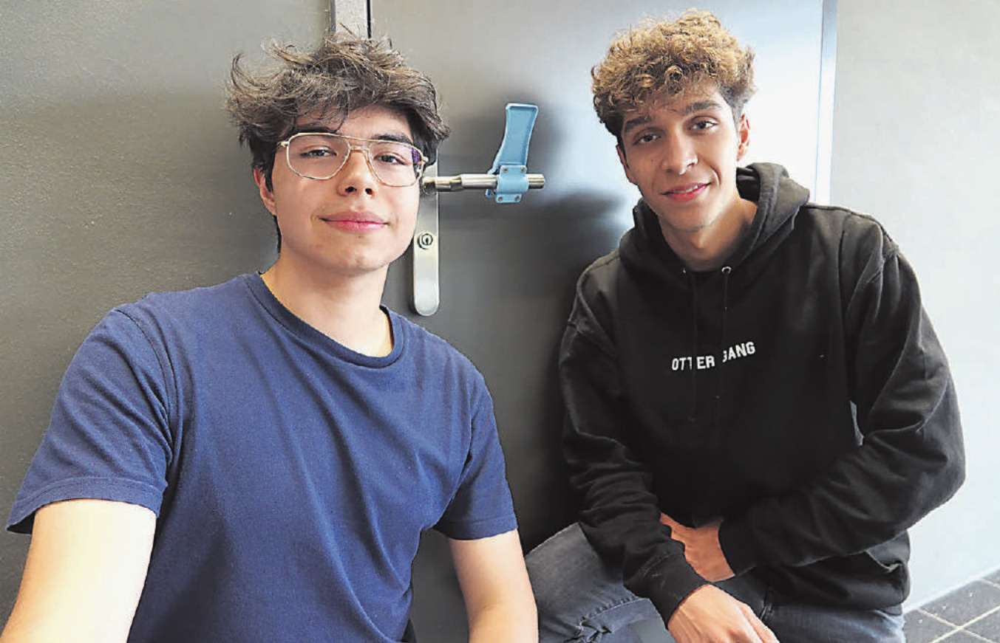

Zwei Gymi-Schüler haben einen «handfreien Türöffner» entwickelt
Junge Unternehmer: Rolf Vollé (links) und David Burgener mit ihrem Produkt, das sie am Türgriff montiert haben. Foto: vzu
Die schulfreie Zeit haben zwei Gymi-Schüler genutzt, um einen «handfreien Türöffner» zu entwickeln. Sie konnten schon mehrere Hundert Stück davon verkaufen. Valentin Zumsteg Die Idee ist aus der Langweile entstanden: «Wir hatten ab Mitte März keine Schule mehr und daher viel Zeit. Wir wollten etwas Unternehmerisches machen», erzählt Rolf Vollé aus Rheinfelden. «Wir haben die schulfreie Zeit genutzt, um ein innovatives Produkt zu entwickeln, das die Schutzkonzepte in Restaurants, Arztpraxen, Fitnesscentren und Büros ergänzt und die Ausbreitung von Covid-19 weiter verlangsamen kann», ergänzt David Burgener. Die beiden 19-Jährigen waren in einer Abschlussklasse des Gymnasiums Muttenz, als Corona den Schulbetrieb in der Schweiz lahmlegte. Erfahrungen sammeln So entwickelten sie zusammen mit einem chinesischen Hersteller einen universellen Griffaufsatz, der an vorhandenen Türklinken befestigt werden kann und ein hygienisches Türöffnen mit dem Unterarm statt mit der Hand ermöglicht. «Auf die Idee sind wir gekommen, als wir zu Beginn der Pandemie im St. Jakob-Park auf der Toilette einen fussbetriebenen Türöffner entdeckten. Wir waren beeindruckt, da wir so etwas noch nie zuvor gesehen hatten. Gleichzeitig haben wir uns gefragt, ob dies nicht praktischer und preisgünstiger möglich ist.» Daraus ist der «Novas Türöffner» entstanden, den sie für 24,95 Franken verkaufen. «Wir haben zuerst Hersteller in der Schweiz und in Europa gesucht, doch das wäre zu teuer geworden», schildert Rolf Vollé. Zwar gibt es vergleichbare Produkte im Handel, doch die beiden Jungunternehmer sind überzeugt, dass ihr Angebot einige Vorteile aufweist: «Unser Türöffner lässt sich auf fast allen Griffen anbringen, sowohl runden als auch eckigen. Zudem verfügt das Material, das wir verwenden, über eine antibakterielle Wirkung», betont Vollé. Bislang konnten sie schon einige Hundert Stück verkaufen. «Unsere Investition haben wir bereits reingeholt, unseren Zeitaufwand aber noch nicht», erklärt David Burgener. Es geht ihnen aber nicht nur ums Geschäft, sie wollen vor allem erste Erfahrungen im unternehmerischen Bereich sammeln. «Es ist toll, wenn wir unser Produkt in Cafés oder Arztpraxen sehen», erklären die beiden. Sie hoffen, dass ihr Türöffner auch unabhängig von der Entwicklung der Pandemie gefragt bleibt, zum Beispiel für öffentliche Toiletten. So oder so stehen für beide wichtige Monate an: Rolf Vollé rückt Ende Juni als Durchdiener ins Militär ein. Danach möchte er an der ETH in Zürich oder der HSG in St. Gallen ein Studium beginnen. David Burgener will Medizin studieren und bereitet sich derzeit auf die Prüfungen vor. Den Verkauf ihres Türöffners werden sie nebenher betreiben.